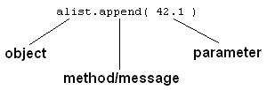

All the values we have worked with in Python have been objects, but we
haven't really been aware of that because we've been able to work with them
using built-in operators. For example we have been able to write x = a + 10
and it has looked enough like regular arithmetic that we haven't had to
address the fact that those things, x and a, are objects.
Aside 1: Already though we have seen that the meaning of the
operator depends on the types of the objects to which it is applied. The
+ in 3 + 2 means arithmetic addition, but the + in "Tim" + "Topper" means string concatenation.
Similarly the % in 9%5 means modulo, but the second % in "%1.2f" % temp means string interpolation.
(Jargon alert: In object oriented programming this is referred to as polymorphism or more specifically operator overloading).
Aside 2: Remember that you can query the type of a literal value
or of the value associated with a name by using the built-in function
type, e.g.
>>> type(4)
<type 'int'>
>>> type("Tim")
<type 'str'>
>>> x = 4.5
>>> type(x)
<type 'float'>
>>> last_name = "Topper"
>>> type(last_name)
<type 'str'>
>>> where int is short for integer, float is short
for floating point and str is short for string.
However, most object types provide more operations than there are built-in operators. In these cases we use a different notation to specify the operation to be performed. But to describe that notation it will help to have a little more jargon.
An object consists of a set of attributes and a set of
methods it knows how to apply to itself. For example we can see that
the string last_name above has as its attribute the sequence of
characters T o p p e r, but what about its methods? One way to
find an object's methods is to use the dir() command, e.g.
>>> dir(last_name)
['__add__', '__class__', '__contains__', '__delattr__', '__doc__', '__eq__', '__ge__', '__getattribute__', '__getitem__', '__getnewargs__', '__getslice__', '__gt__', '__hash__', '__init__', '__le__', '__len__', '__lt__', '__mod__', '__mul__', '__ne__', '__new__', '__reduce__', '__reduce_ex__', '__repr__', '__rmod__', '__rmul__', '__setattr__', '__str__', 'capitalize', 'center', 'count', 'decode', 'encode', 'endswith', 'expandtabs', 'find', 'index', 'isalnum', 'isalpha', 'isdigit', 'islower', 'isspace', 'istitle', 'isupper', 'join', 'ljust', 'lower', 'lstrip', 'replace', 'rfind', 'rindex', 'rjust', 'rsplit', 'rstrip', 'split', 'splitlines', 'startswith', 'strip', 'swapcase', 'title', 'translate', 'upper', 'zfill']
>>> The names beginning with double underscores (__) correspond
to the methods invoked by operators, e.g. the __add__ method is
invoked when + appears between two string values. The names
after the double underscore names are invoked by giving the name of the
object followed by a period and then the name of the method followed by
parentheses, e.g.
>>> last_name.upper()
'TOPPER'
>>> last_name.center(20)
' Topper '
>>>Note that when the method requires parameters they are listed in the parentheses, like 20 in the second command above.
In Python everything is an object. For instance we have seen this
dot notation before, when importing the modules random and
math. That's because an imported module is an object and we
access the methods the module provides using this same dot notation. The dot
notation for accessing object attributes and methods is common to most
object-oriented languages including C++, Java, and Javascript.
The general syntax to invoke one of an object's methods is,
object_name.method_name(parameters)where the parameters depend on the method, and may be optional as
in last_name.upper() above, or provided as in last_name.center(20).
